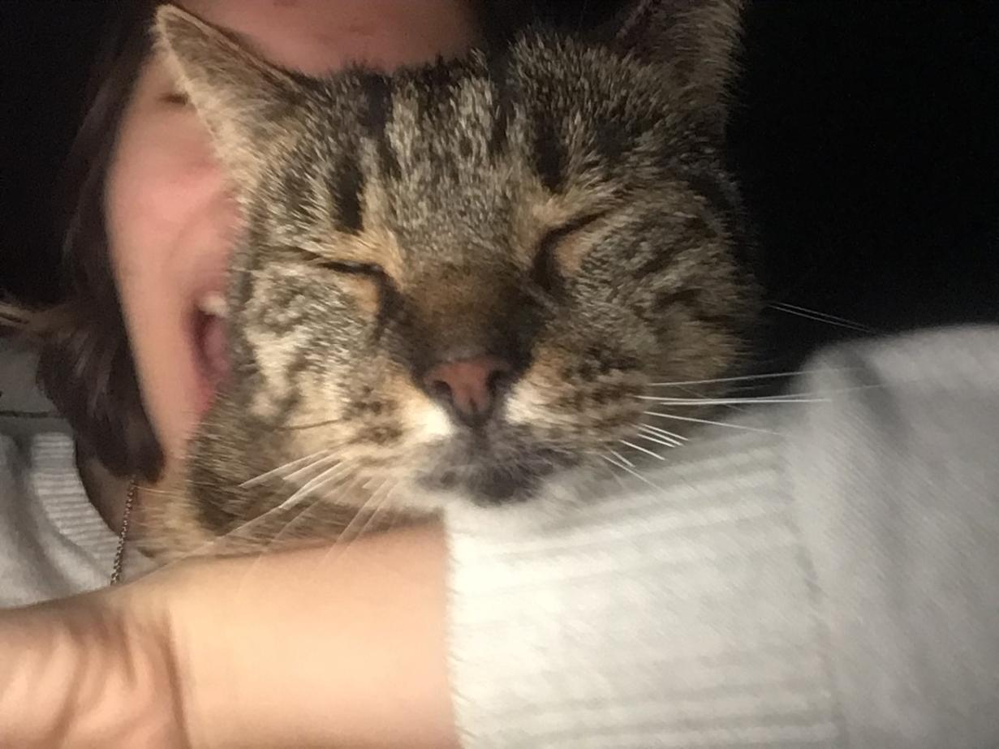
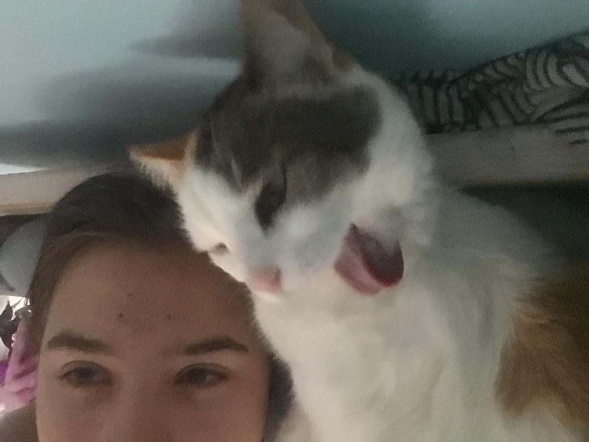

cats in media! ᓚᘏᗢ
˗ˏˋ❥ info about the cats we all dearly love! ☽´ˎ˗


This site was mainly made for a school project, but I like viewing this as a personal project aswell! This site is perfect for cat lovers that would like to broaden their interest in other types of media including cats. For example, if you really enjoyed the Harry Potter books or movies, you could find suggestions here for other books or films, which coincidentally also have cats! The memes page is dedicated to revisiting the cats that make/used to make us laugh, and so it is more for fun! When you're looking for a cat but can't find it, it might not be on the site. If you want you're favorite cat to be futured here you can head to the end of any page or click here to find a Google form, fill it out, and maybe if you're lucky the cat will be featured in a couple days!
★ nyan cat! 🌒︎
❀ a special mention! ✦
 I obviously feel the need to thank my cats, which made me a cat person and inspired me for this website.